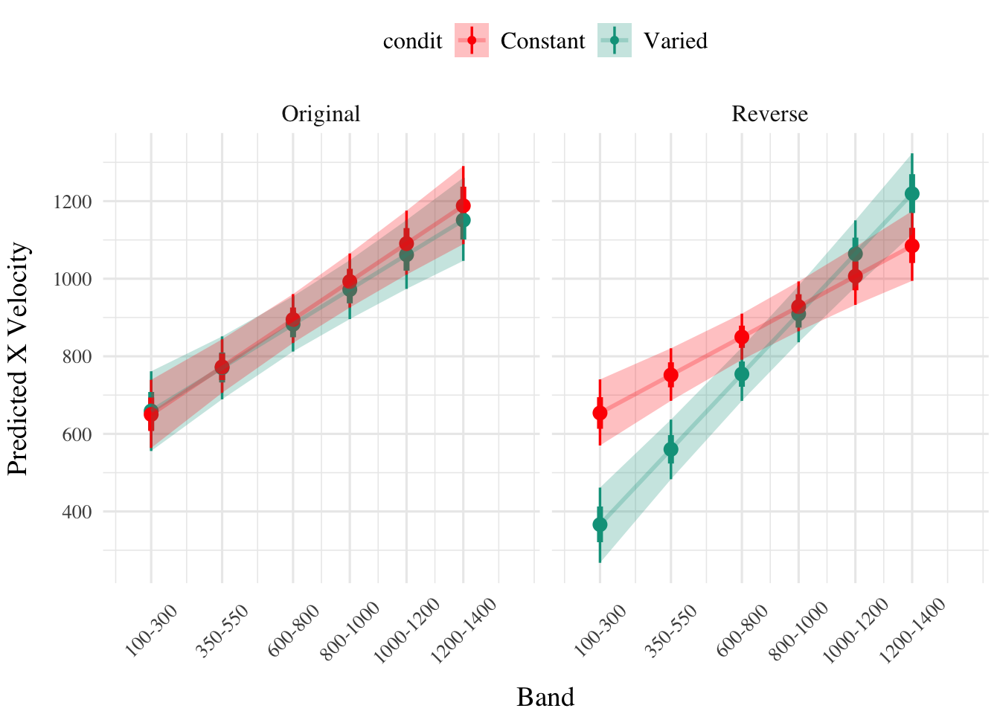
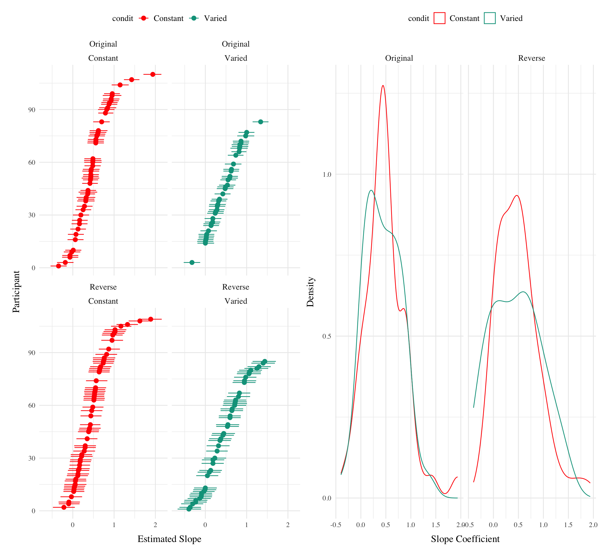

The major manipulation adjustment of experiment 3 is for participants to receive ordinal feedback during training, in contrast to the continuous feedback of the earlier experiments. Ordinal feedback informs participants whether a throw was too soft, too hard, or fell within the target velocity range. Experiment 3 participants were randomly assigned to both a training condition (Constant vs. Varied) and a Band Order condition (original order used in Experiment 1, or the Reverse order of Experiment 2).
Results
Testing Phase - No feedback.
In the first part of the testing phase, participants are tested from each of the velocity bands, and receive no feedback after each throw. Note that these no-feedback testing trials are identical to those of Experiment 1 and 2, as the ordinal feedback only occurs during the training phase, and final testing phase, of Experiment 3.
Deviation From Target Band
Descriptive summaries testing deviation data are provided in Table 1 and Figure 1. To model differences in accuracy between groups, we fit Bayesian mixed effects regression models to the trial level data from the testing phase. The primary model predicted the absolute deviation from the target velocity band (dist) as a function of training condition (condit), target velocity band (band), and their interaction, with random intercepts and slopes for each participant (id).
Table 1: Testing Deviation - Empirical Summary
(a) Constant Testing - Deviation
Band
Band Type
Mean
Median
Sd
100-300
Extrapolation
396
325
350
350-550
Extrapolation
278
176
299
600-800
Extrapolation
173
102
215
800-1000
Trained
225
126
284
1000-1200
Extrapolation
253
192
271
1200-1400
Extrapolation
277
210
262
(b) Varied Testing - Deviation
Band
Band Type
Mean
Median
Sd
100-300
Extrapolation
383
254
385
350-550
Extrapolation
287
154
318
600-800
Extrapolation
213
140
244
800-1000
Trained
199
142
209
1000-1200
Trained
222
163
221
1200-1400
Trained
281
227
246
Band
Band Type
Mean
Median
Sd
100-300
Extrapolation
403
334
383
350-550
Extrapolation
246
149
287
600-800
Trained
155
82
209
800-1000
Extrapolation
207
151
241
1000-1200
Extrapolation
248
220
222
1200-1400
Extrapolation
322
281
264
Band
Band Type
Mean
Median
Sd
100-300
Trained
153
0
307
350-550
Trained
147
55
258
600-800
Trained
159
107
192
800-1000
Extrapolation
221
160
235
1000-1200
Extrapolation
244
185
235
1200-1400
Extrapolation
324
264
291
Figure 1: e3. Deviations from target band during testing without feedback stage.
Table 2: Experiment 3. Bayesian Mixed Model predicting absolute deviation as a function of condition (Constant vs. Varied) and Velocity Band
Term
Estimate
95% CrI Lower
95% CrI Upper
pd
b_Intercept
342.85
260.18
426.01
1.00
b_conditVaried
7.38
-116.96
133.20
0.54
b_bandOrderReverse
-64.99
-179.19
49.75
0.86
Band
-0.13
-0.22
-0.04
1.00
b_conditVaried:bandOrderReverse
-185.30
-360.16
-8.89
0.98
b_conditVaried:bandInt
0.00
-0.15
0.13
0.52
b_bandOrderReverse:bandInt
0.11
-0.01
0.24
0.96
b_conditVaried:bandOrderReverse:bandInt
0.19
-0.01
0.38
0.97
The effect of training condition in Experiment 3 showed a similar pattern to Experiment 2, with the varied group tending to have lower deviation than the constant group (β = 7.38, 95% CrI [-116.96, 133.2]), with 97% of the posterior distribution falling under 0.
(NEED TO CONTROL FOR BAND ORDER HERE)
Figure 2: e3. Conditioinal Effect of Training Condition and Band. Ribbon indicated 95% Credible Intervals.
Discrimination between Velocity Bands
In addition to accuracy/deviation. We also assessed the ability of participants to reliably discriminate between the velocity bands (i.e. responding differently when prompted for band 600-800 than when prompted for band 150-350). Table 3 shows descriptive statistics of this measure, and Figure 1 visualizes the full distributions of throws for each combination of condition and velocity band. To quantify discrimination, we again fit Bayesian Mixed Models as above, but this time the dependent variable was the raw x velocity generated by participants.
Slope estimates for experiment 3 suggest that participants were capable of distinguishing between velocity bands even when provided only ordinal feedback during training (β = 0.49, 95% CrI [0.36, 0.62]). Unlike the previous two experiments, the posterior distribution for the interaction between condition and band was consistently positive, suggestive of superior discrimination for the varied participants β = -0.04, 95% CrI [-0.23, 0.15].

Figure 4: Conditional effect of training condition and Band. Ribbons indicate 95% HDI.
Table 5: Slope coefficients by quartile, per condition
Condition
Q_0%_mean
Q_25%_mean
Q_50%_mean
Q_75%_mean
Q_100%_mean
Constant
-0.3426105
0.1793676
0.4467798
0.6956343
1.935772
Varied
-0.3940297
0.0950194
0.4278994
0.7381120
1.434470
bandOrder
Condition
Q_0%_mean
Q_25%_mean
Q_50%_mean
Q_75%_mean
Q_100%_mean
Original
Constant
-0.3426105
0.2643782
0.4405246
0.6604371
1.935772
Original
Varied
-0.3129009
0.1606360
0.4222557
0.7096681
1.345274
Reverse
Constant
-0.2120070
0.1587102
0.4577920
0.7084432
1.898910
Reverse
Varied
-0.3940297
0.0071441
0.4346001
0.7886825
1.434470
Figure 5 shows the distributions of estimated slopes relating velocity band to x velocity for each participant, ordered from lowest to highest within condition. Slope values are lower overall for varied training compared to constant training. Figure Xb plots the density of these slopes for each condition. The distribution for varied training has more mass at lower values than the constant training distribution. Both figures illustrate the model’s estimate that varied training resulted in less discrimination between velocity bands, evidenced by lower slopes on average.
(a) Slope estimates by participant - ordered from lowest to highest within each condition.

(b) Destiny of slope coefficients by training group
Figure 5: Slope distributions between condition
(a) subset with largest slopes
(b) subset with smallest slopes
Figure 6: Subset of Varied and Constant Participants with the smallest and largest estimated slope values. Red lines represent the best fitting line for each participant, gray lines are 200 random samples from the posterior distribution. Colored points and intervals at each band represent the empirical median and 95% HDI.